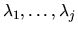
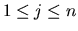
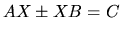

Next: Singular Value Decomposition
Up: Nonsymmetric Eigenproblems
Previous: Balancing
Contents
Index
The Schur form depends on the order of the eigenvalues on the diagonal
of T and this may optionally be chosen by the user. Suppose the user chooses
that
,
,
appear in the upper left
corner of T. Then the first j columns of Z span the right invariant
subspace of A corresponding to
.
The following routines perform this re-ordering and also
compute condition numbers for eigenvalues, eigenvectors,
and invariant subspaces:
- 1.
- xTREXC will move an eigenvalue (or 2-by-2 block) on the diagonal of
the Schur form from its original position to any other position. It may be used to
choose the order in which eigenvalues appear in the Schur form.
- 2.
- xTRSYL solves
the Sylvester matrix equation 
for X, given
matrices A, B and C, with A and B (quasi) triangular.
It is used in the routines xTRSNA and xTRSEN, but it is also of independent
interest.
- 3.
- xTRSNA computes the condition numbers of the eigenvalues and/or
right eigenvectors of a matrix T in Schur form.
These are the same as the condition
numbers of the eigenvalues and right eigenvectors of the original matrix
A from which T is derived. The user may compute these condition numbers
for all eigenvalue/eigenvector pairs, or for any selected subset.
For more details, see section 4.8 and [12].
- 4.
- xTRSEN moves
a selected subset of the eigenvalues of a matrix T
in Schur form to the upper left corner of T, and optionally computes
the condition numbers of their average value and of their right
invariant subspace. These are the same as the condition numbers of the
average eigenvalue and right invariant subspace of the original matrix A
from which T is derived.
For more details, see section 4.8 and
[12]
See Table 2.11 for a complete list of the routines.
Table 2.11:
Computational routines for the nonsymmetric eigenproblem
| Type of matrix |
Operation |
Single precision |
Double precision |
| and storage scheme |
|
real |
complex |
real |
complex |
| general |
Hessenberg reduction |
SGEHRD |
CGEHRD |
DGEHRD |
ZGEHRD |
| |
balancing |
SGEBAL |
CGEBAL |
DGEBAL |
ZGEBAL |
| |
backtransforming |
SGEBAK |
CGEBAK |
DGEBAK |
ZGEBAK |
| orthogonal/unitary |
generate matrix after |
SORGHR |
CUNGHR |
DORGHR |
ZUNGHR |
| |
Hessenberg reduction |
|
|
|
|
| |
multiply matrix after |
SORMHR |
CUNMHR |
DORMHR |
ZUNMHR |
| |
Hessenberg reduction |
|
|
|
|
| Hessenberg |
Schur factorization |
SHSEQR |
CHSEQR |
DHSEQR |
ZHSEQR |
| |
eigenvectors by |
SHSEIN |
CHSEIN |
DHSEIN |
ZHSEIN |
| |
inverse iteration |
|
|
|
|
| (quasi)triangular |
eigenvectors |
STREVC |
CTREVC |
DTREVC |
ZTREVC |
| |
reordering Schur |
STREXC |
CTREXC |
DTREXC |
ZTREXC |
| |
factorization |
|
|
|
|
| |
Sylvester equation |
STRSYL |
CTRSYL |
DTRSYL |
ZTRSYL |
| |
condition numbers of |
STRSNA |
CTRSNA |
DTRSNA |
ZTRSNA |
| |
eigenvalues/vectors |
|
|
|
|
| |
condition numbers of |
STRSEN |
CTRSEN |
DTRSEN |
ZTRSEN |
| |
eigenvalue cluster/ |
|
|
|
|
| |
invariant subspace |
|
|
|
|
Next: Singular Value Decomposition
Up: Nonsymmetric Eigenproblems
Previous: Balancing
Contents
Index
Susan Blackford
1999-10-01